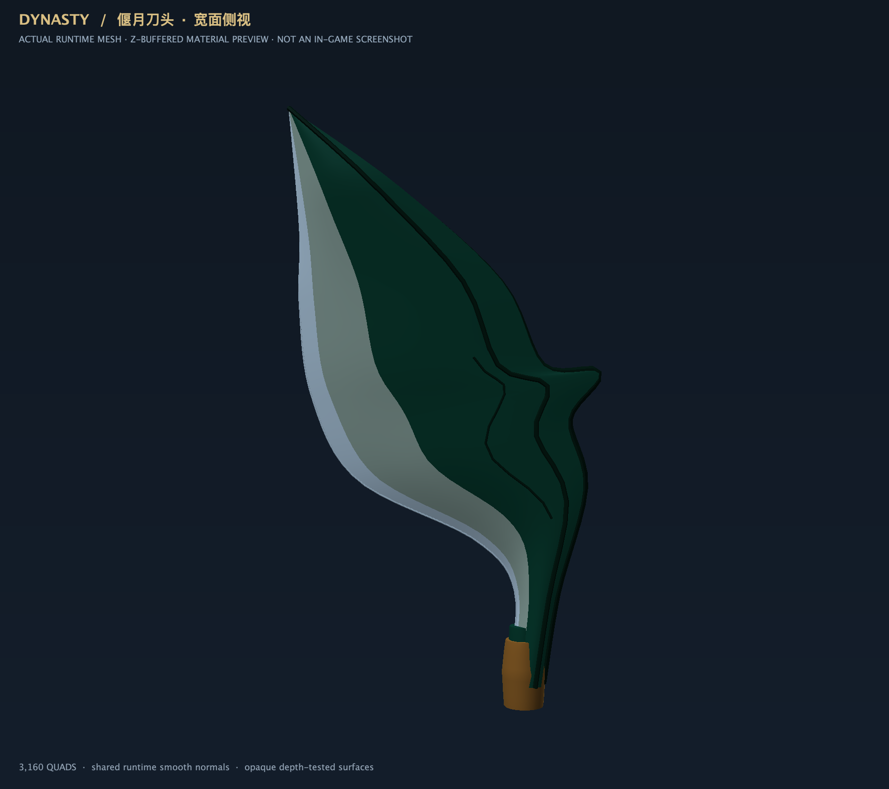
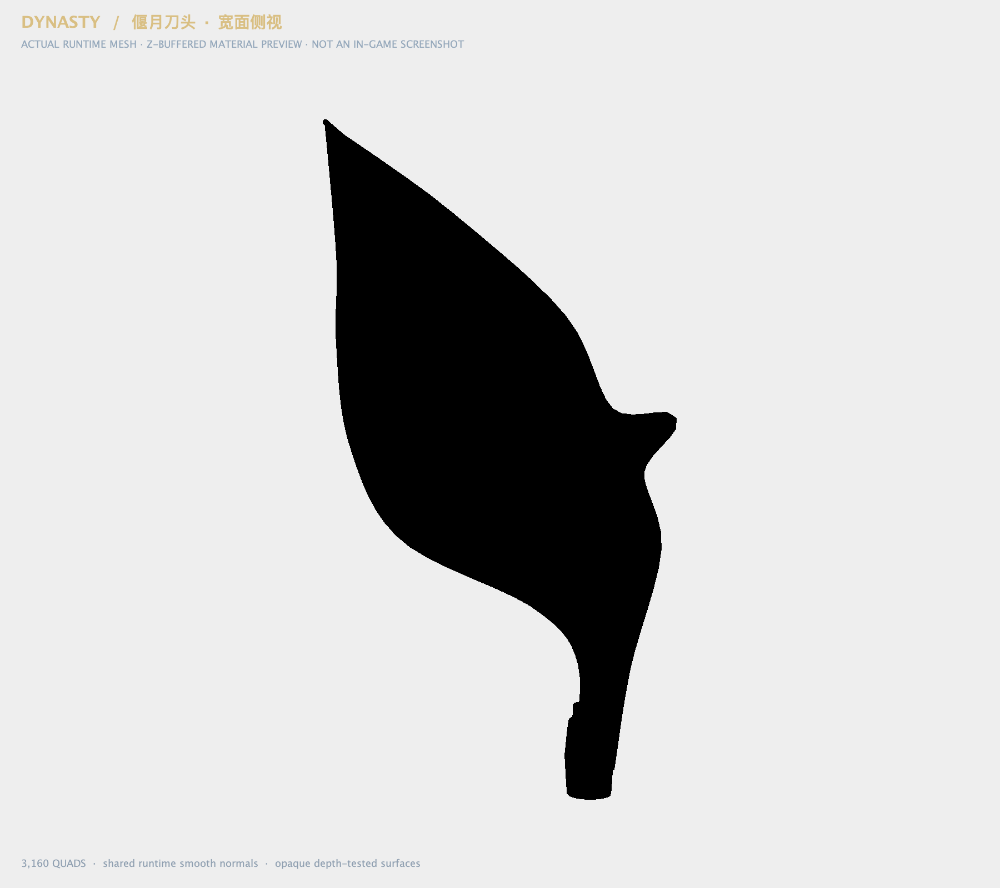
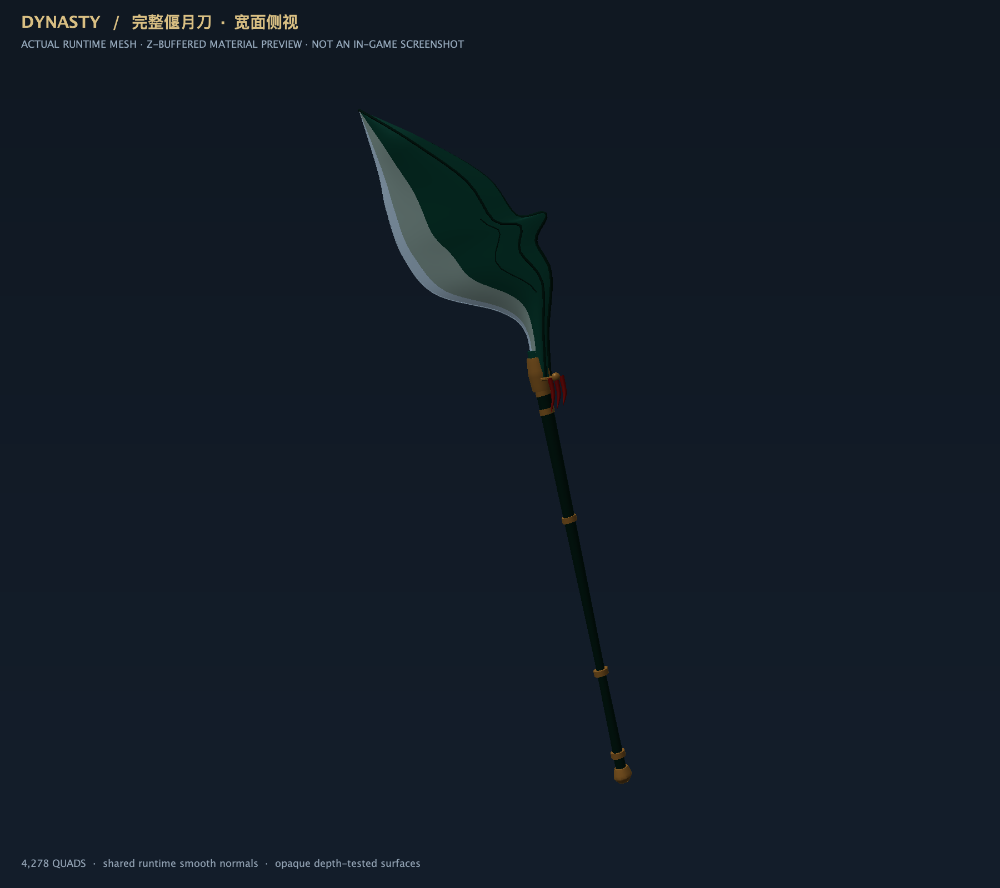
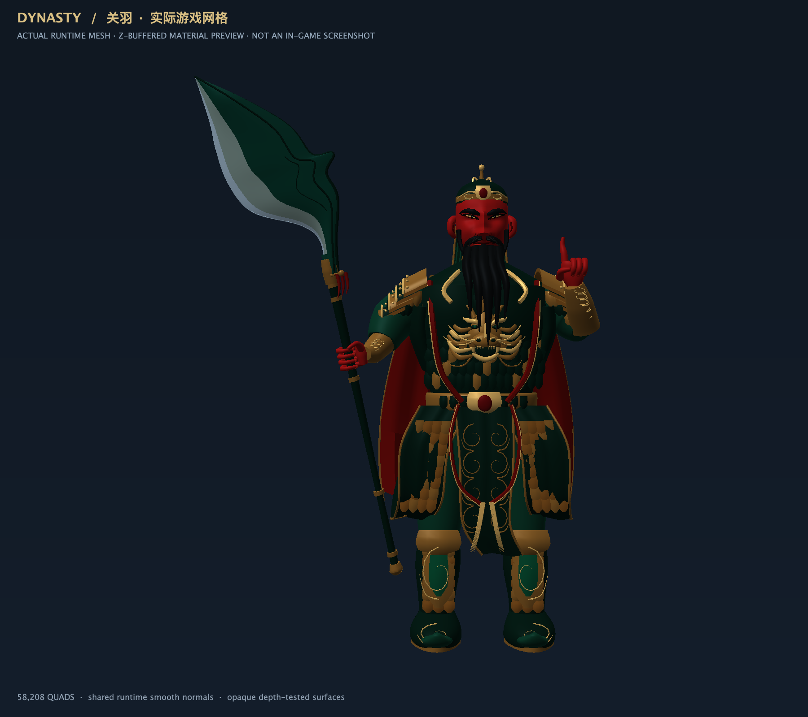

刀体轮廓长宽比约 1.87:1，刀尖横向偏离刀杆轴线 1.55 格。收腰、宽刀腹、前伸上挑刀尖与背钩组成不对称轮廓；银色磨锋区域扩大。人物、手部、姿势、刀杆和红缨与修改前一致。
参考传统形制，自主重建网格，没有导入参考图片或他人模型。参考：偃月刀实物、传统刀型剪影辨识。
以下为实际模型离线渲染，不是游戏截图。“侧视”指看向刀身宽面，方便检查轮廓。编译与几何检查通过；先验收造型，不继续扩展。



